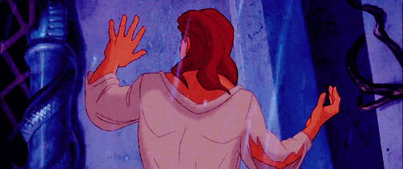

Once upon a time, in a small village deep in a forest, there lived a kind young woman named Belle. She loved reading books, and everyone knew her for her warm heart and her beauty. Belle had dark hair like the night, eyes as deep as the ocean, and a spirit as free as a bird.

Belle lived with her father, Maurice, who was an inventor. He made new gadgets and gizmos, and Belle loved listening to his stories and helping him with his experiments. The villagers thought Belle was different because she loved books and dreamed of adventures, but Belle did not mind.

One day, Maurice set off on a journey to show his invention to another village. On the way, he got lost in the dark, scary forest. The wind howled, and the trees seemed to whisper secrets. Maurice found a big, spooky castle and went inside to find shelter.

Inside, he met the owner of the castle, a scary Beast. The Beast was once a handsome prince, but an enchantress had turned him into a Beast because he was selfish and mean. To break the curse, someone had to love him despite his appearance.

The Beast locked Maurice in a dungeon for trespassing. Maurice's horse, Philippe, ran back to the village to tell Belle what happened. Belle bravely went to the castle to rescue her father. When she found him in the dungeon, she offered to take his place as the Beast's prisoner. The Beast agreed and let Maurice go.

Belle stayed in the castle and found the Beast was not only scary but also sad and lonely. She discovered a huge library and loved reading the books. Over time, Belle and the Beast talked, read, and shared stories. Belle learned about the curse and wanted to help break it. The Beast began to care for Belle's intelligence, beauty, and kindness.

Meanwhile, Gaston, a boastful man from the village who wanted to marry Belle, made a plan to force her into marriage. He gathered the villagers and went to the castle, where a big fight happened.

The Beast, who loved Belle, fought to protect her. When Gaston's plan was revealed, the villagers turned against him. Belle's love for the Beast and the Beast's love for her broke the curse. The Beast turned back into a handsome prince, and Belle's kindness was rewarded.
Belle and the prince got married in a grand ceremony, surrounded by the enchanted objects in the castle that had also been freed from the curse. The villagers learned to appreciate Belle's unique qualities, and Belle and the prince lived happily ever after.